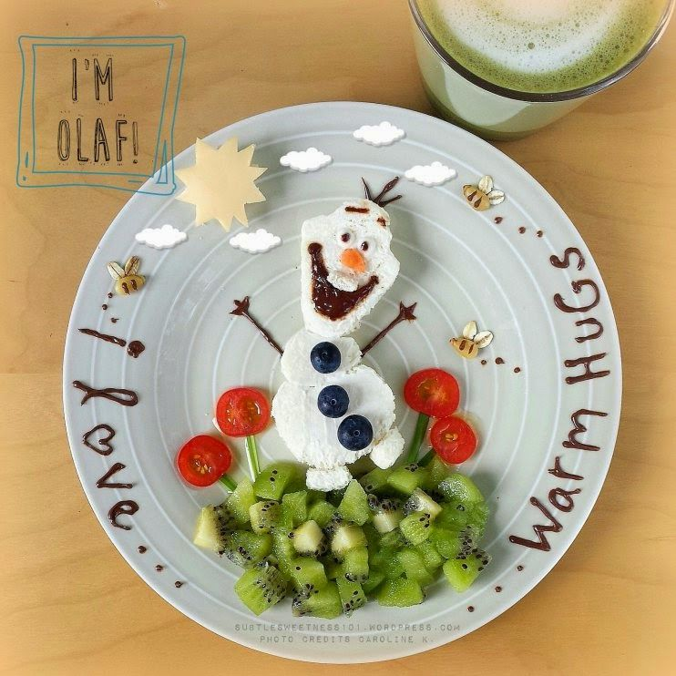

Comidinhas & Lanches
Quem não gosta de deliciosas receitas feita na hora? Pode ser com ou sem recheio, com ou sem cobertura, grandiosos e elaborados ou simples e caseiros. Essas delícias está sempre presente em nossas mesas e comemorações em geral. Encaixa-se em qualquer horário do dia, seja para um café da manhã, no almoço, um chá da tarde ou uma sobremesa à noite. Amantes dessas delícias ou não, ninguém resiste a uma fatia. Até porque, você já viu alguém triste comendo? Acho que não, hein :)?!
Nosso objetivo é: "Garantir ao cliente ótimos momentos desfrutando de deliciosas receitas"
Venha conhecer os melhores receitas feitas pela mão de fada Dina Souza. Os melhores já provados e aprovados, vai te deixar com água na boca :).
Venha conferir pelo nosso instagram clicando aqui
Nosso estabelecimento
Nosso estabelecimento está localizado no coração da cidade
Benefícios:
- Atendimento ao Cliente
- Receitas Diferenciadas
- Localização
- Profissional Qualificado.